About Me
I am a passionate, research-driven robotics engineer committed to solving real-world challenges by advancing autonomous navigation, motion planning, and robot manipulation. My current work focuses on mobile robotics, sensor fusion, state estimation, and ROS2 development, with hands-on experience deploying autonomous behaviors on ground, aerial, and aquatic robots.
I specialize in implementing Extended Kalman Filters (EKF) for multi-sensor fusion, developing control systems for mobile manipulators, and building perception-driven pipelines using computer vision and LiDAR. My research interests include localization algorithms, Sim2Real transfer, and real-time embedded systems for autonomous robots.
Recent Articles
I share technical insights on robotics, embedded systems, and autonomous navigation on Medium:
Visit My Medium Blog
Deep dives into sensor fusion, ROS2, mobile robotics, and practical deployment challenges.
Engagement & Achievements
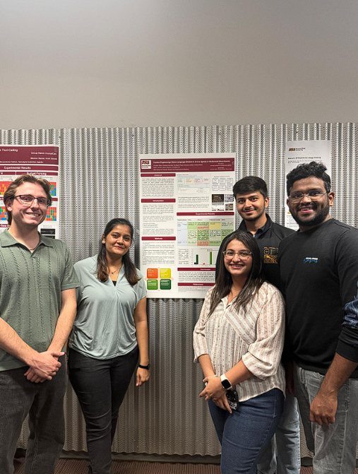
NLP Poster Presentation
Presented "Context Engineering VLMs as Interactive Agents" at ASU NLP course showcase.
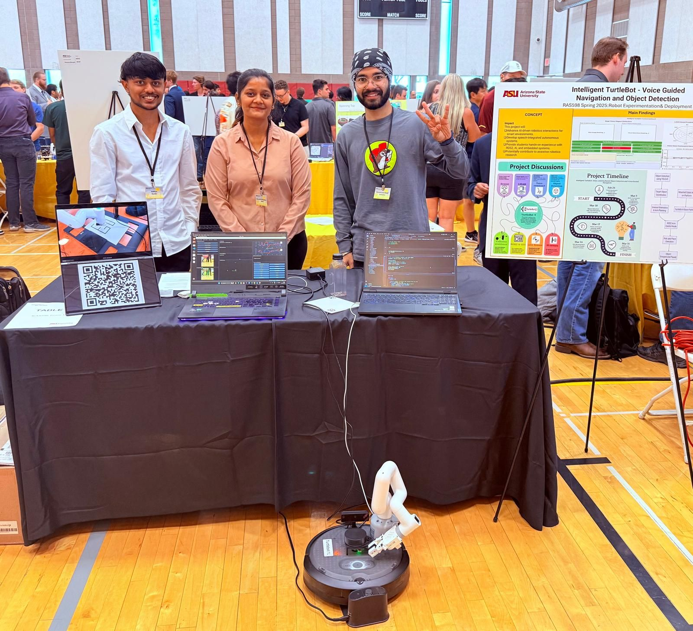
ASU Innovation Showcase
Presented "Intelligent Voice-Guided Mobile Manipulator" at ASU's Innovation Showcase for RAS 598.
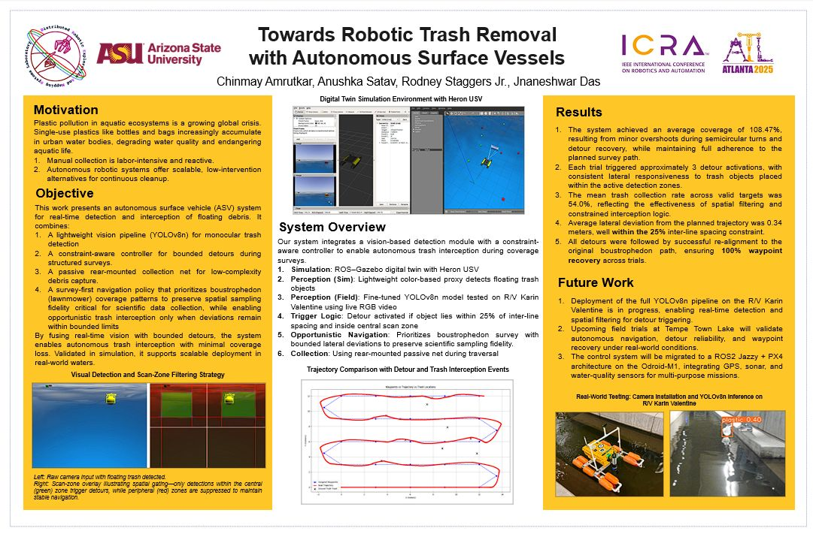
ICRA 2025 – Atlanta Poster Display
Displayed ICRA 2025 paper poster "Towards Robotic Trash Removal with Autonomous Surface Vessels" in Atlanta.
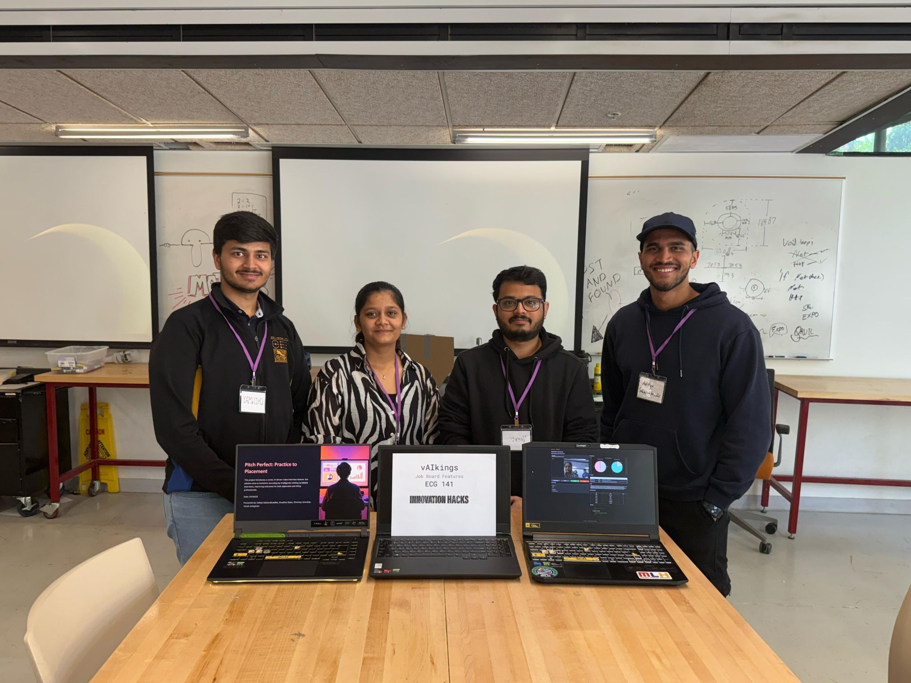
InnovationHacks 2025 – 2nd Place
Won 2nd Place ($300) and 1st Prize for "Best Use of MATLAB" at InnovationHacks 2025 as part of Team vAIKings.
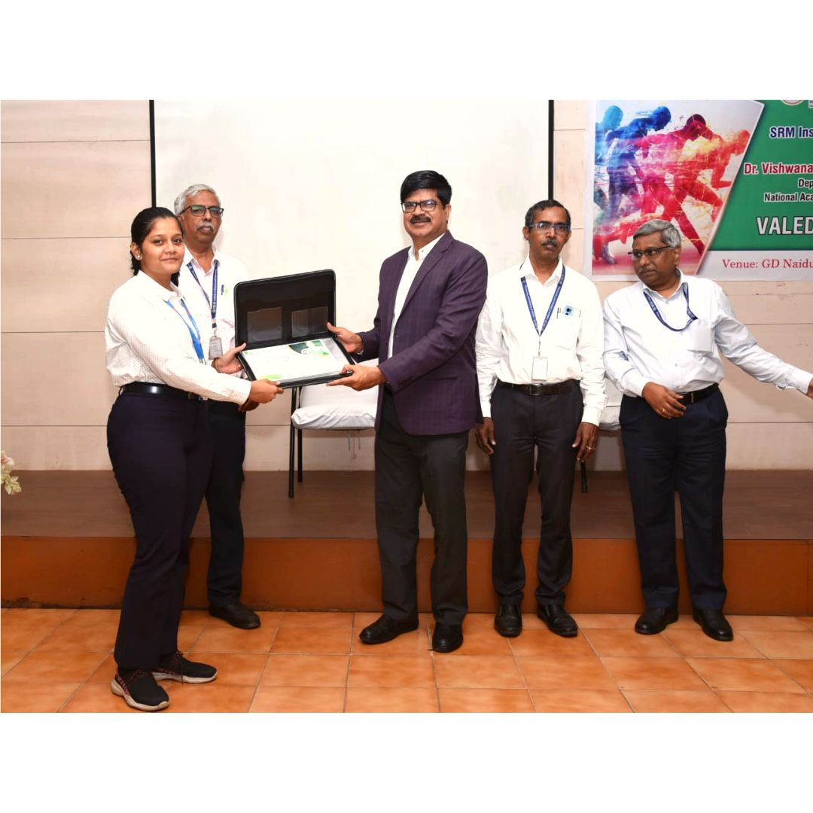
National Student Exchange – SRM IST
Completed Biomechanics course at SRM IST, Kattankulathur as part of National Student Exchange during Bachelors.
Publications
Towards Robotic Trash Removal with Autonomous Surface Vessels
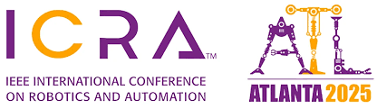
IEEE ICRA 2025 – "Robots in the Wild" Track- Developed autonomous USV system for trash detection
- Integrated YOLOv8 and ROS for decision-making
A State-of-the-Art Review on Robotics in Waste Sorting
International Journal on Interactive Design and Manufacturing (IJIDeM), May 2023
Read full article →Overview of Autonomous Vehicles and its Challenges
Techno-Societal 2022 Conference, December 2022
Read full article →Project Showcase

Sensor Fusion for Mobile Robots (TurtleBot4)
EKF-based state estimation fusing wheel odometry, IMU, and LiDAR in ROS2. Validated under sensor drift and noise conditions.
Dec 2024 – Ongoing
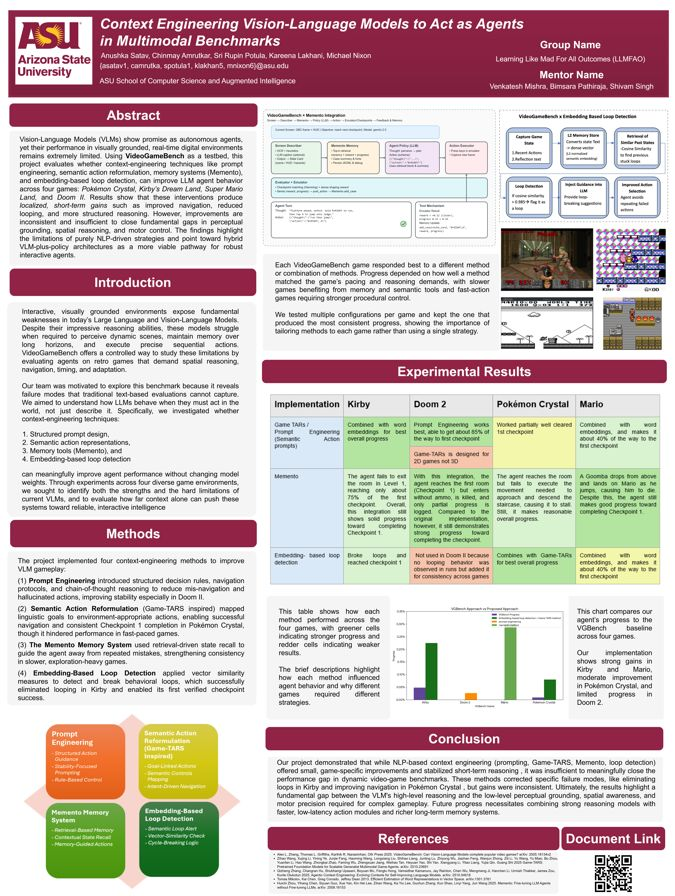
Context Engineering VLMs as Interactive Agents
NLP final project. Structured prompts, memory systems, loop detection. Evaluated on Pokémon, Kirby, Mario, Doom II.
Jul 2025 – Dec 2025
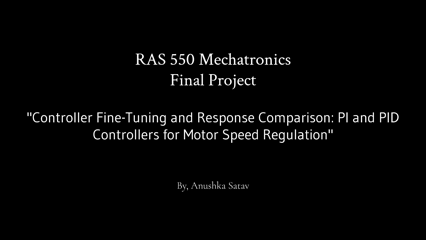
Motor Velocity Control using PI/PID Controllers
Mechatronics final project. Arduino-Simulink integration with encoder feedback for real-time DC motor control.
Jul 2025 – Dec 2025
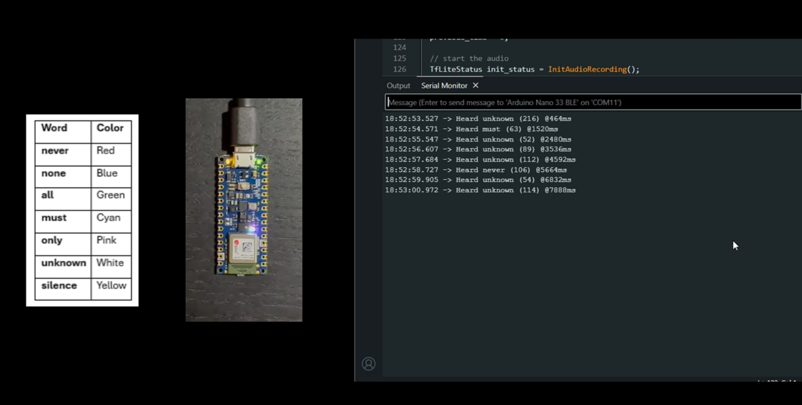
Real-Time Embedded Keyword Spotting
TinyML on Arduino Nano 33 BLE Sense. 95% test accuracy, 74% model size reduction via INT8 quantization.
Sept 2025 – Dec 2025
GitHub
Real-Time Sensor-Agnostic Posture Classification
IMU-based 1D-CNN on Arduino. 92.73% accuracy with windowing, normalization, and sensor fusion.
Sept 2025 – Dec 2025
GitHub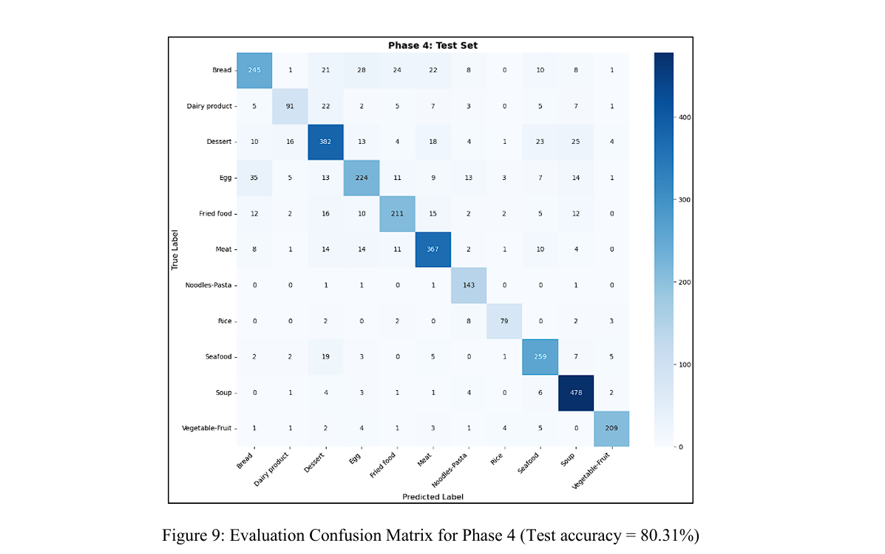
Food Image Classification using CNNs
ShuffleNet V2 transfer learning. 80.3% accuracy on Food-11 dataset with only ~11K trainable parameters.
Sept 2025 – Dec 2025
GitHub
Autonomous Drone – Rock Detection, Mapping & Landing
ROS2-based drone in PX4 Gazebo surveying cylindrical rock formations. Boustrophedon search with ArUco marker detection.
March 2025 – April 2025
GitHub
Parrot Minidrone – Autonomous Visual Tracking & Landing
Parrot Mambo tracking a red square on a moving robot and landing accurately using MATLAB Simulink Stateflow.
March 2025 – April 2025
GitHub
Parrot Minidrone – Red Line Following & Precision Landing
Parrot Mambo following a red line and landing on a circular target using image processing in MATLAB Simulink.
March 2025 – April 2025
GitHub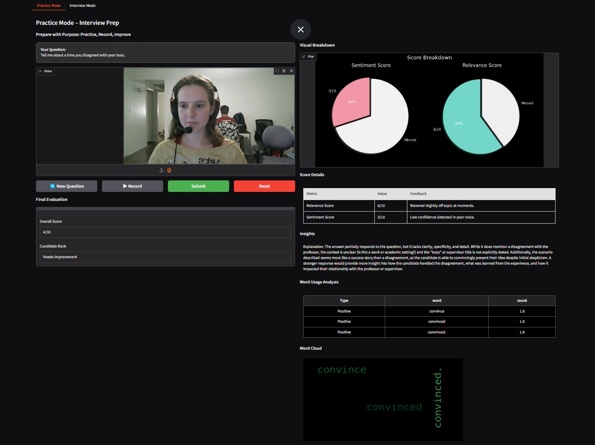
PitchPerfect – Real-Time AI Interview Coach (2nd Prize)
Gradio-based NLP web app for real-time mock interview feedback. Integrated whisper.cpp and Olama. Won hackathon 2nd prize.
April 2025
GitHub
Autonomous Surface Vessel – Vision-Guided Trash Detection
Heron USV in ROS-Gazebo with YOLOv8n for trash detection. Co-authored IEEE ICRA 2025 workshop paper.
March 2025 – April 2025
GitHub
Intelligent TurtleBot4 – Voice-Guided Mobile Manipulator
ROS2 TurtleBot4 with MyCobot arm. Voice commands via Whisper.cpp, YOLOv8 perception, LiDAR/IMU, PyQt5 GUI.
January 2025 – April 2025
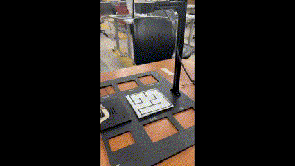
Autonomous 4x4 Maze Navigation – MyCobot Pro 600
Computer vision algorithm for MyCobot Pro 600 to autonomously navigate 4x4 mazes, validated in MATLAB simulation.
November 2024 – December 2024
GitHub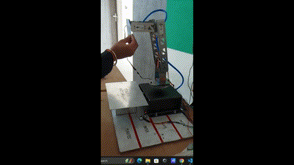
B.Tech Final: Robotic Arm for Waste Sorting
4-DOF robotic arm with vacuum gripper using YOLOv7 for waste classification into recyclable categories. 200g payload.
September 2022 – November 2022
GitHubProfessional Experience
Research Volunteer
Robotics Systems & Dynamics Group Lab, Arizona State University
- Designed and implemented EKF-based state estimation fusing wheel odometry, IMU, and LiDAR in ROS2
- Derived nonlinear motion and measurement models; validated covariance propagation and noise modeling
- Evaluated robustness under sensor drift, noise, and different motion conditions
Research Volunteer
AAIR Lab, Arizona State University
- Explored robot motion planning pipelines in ROS and Gazebo
- Executed MoveIt-based control tasks for manipulation
Robotics Engineering Intern
Void Robotics (Remote)
- Tackled robotics tasks with Arduino libraries and Nav2 for autonomous navigation
- Debugged and wrote reliable code for ROS2 development
- Studied ROS2 advanced, Git/GitHub from scratch, operated Linux confidently
R&D Intern
Hexagon Manufacturing Intelligence
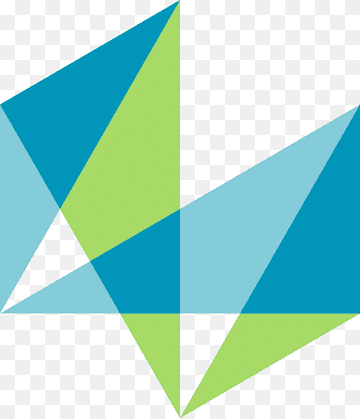
- FEA simulations on 10 models using MSC Apex, Nastran, and Dytran
- Automated model building reducing creation time by 90% (20 min → under 2 min)
Education
Masters in Robotics and Autonomous Systems (AI)
Arizona State University
CGPA: 4.0/4.0 | NAMU Scholar ($10k)
Courses: AI, Robotic Systems I & II, NLP, Mechatronics, Embedded ML, Space Robotics & AI
B.Tech in Robotics and Automation
MIT World Peace University
CGPA: 9.7/10 | Silver Medalist
My Journey
Publication: Robotic Trash Removal
May 2025
Published at IEEE ICRA 2025. Poster displayed in Atlanta.
Research – Sensor Fusion Lab
Dec 2024 – Present
EKF multi-sensor fusion at ASU Robotics Systems & Dynamics Lab.
Masters at ASU
August 2024
Started with 4.0/4.0 GPA. NAMU Scholar.
Void Robotics Intern
May 2023 – Nov 2023
Autonomous navigation and ROS2 development.
Publication: Waste Sorting Review
May 2023
Published in IJIDeM (Q2 journal).
Hexagon R&D Intern
Feb 2023 – Sep 2023
FEA automation, 90% time reduction.
Publication: Autonomous Vehicles
December 2022
Techno-Societal 2022 Conference.
B.Tech Graduation
August 2019
9.7/10 CGPA, Silver Medalist, MIT WPU.